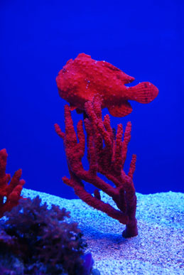
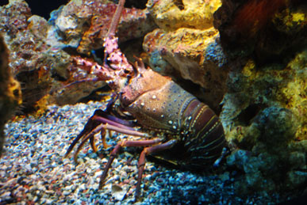

Underwater Tours by Eloise arranges a wide variety of full-day and half-day dives for families, friends, and teams. Imagine yourself taking photographs of beautiful underwater animals and scenes. Stop by our office to see pictures from the underwater tours that are available.

This beautiful red fish is called a Frog Fish. It is just one example of the colorful sights that you will see underwater. We find Frog Fish during our Maui dives. Instructors on all tours show you how to make the best use of your equipment to take dynamic and lively photos of life underwater.
Visit our Web site or stop by our office to learn about the many exciting underwater tours that we offer. We can design a tour to meet the needs and desires of you and your group.

This picture highlights another Maui underwater tour sight. The colorful Hawaiian spiny lobster is often seen on this and other dives. The half-day Maui dive is chosen for its wonderful photographic opportunities of a variety of sea creatures. Beautiful photos of the sea animals and the surrounding environment can be taken on this tour.
There are many other full-day and half-day scenic underwater tours that you can experience with Underwater Tours by Eloise. You can design your dream tour by place or activity level.
These pictures, taken from the half-day Maui tour, show a sample of the many beautiful sights that you can see while enjoying your underwater tour.
To book your own trip, please call us at (999) 555-ELOISE or e-mail us at underwatertoursbyeloise@isp.com. Please include the following information: (1) your address and phone number, (2) a list of your favorite photography activities, and (3) a few days and times that are convenient for us to contact you. We will respond immediately when we receive your request.